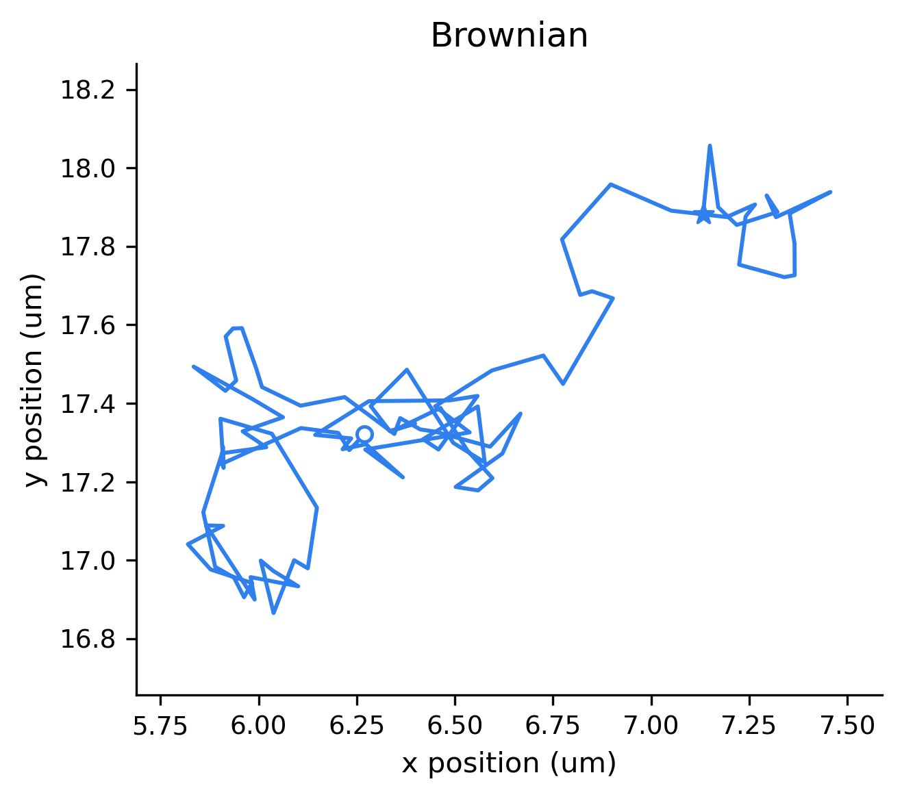
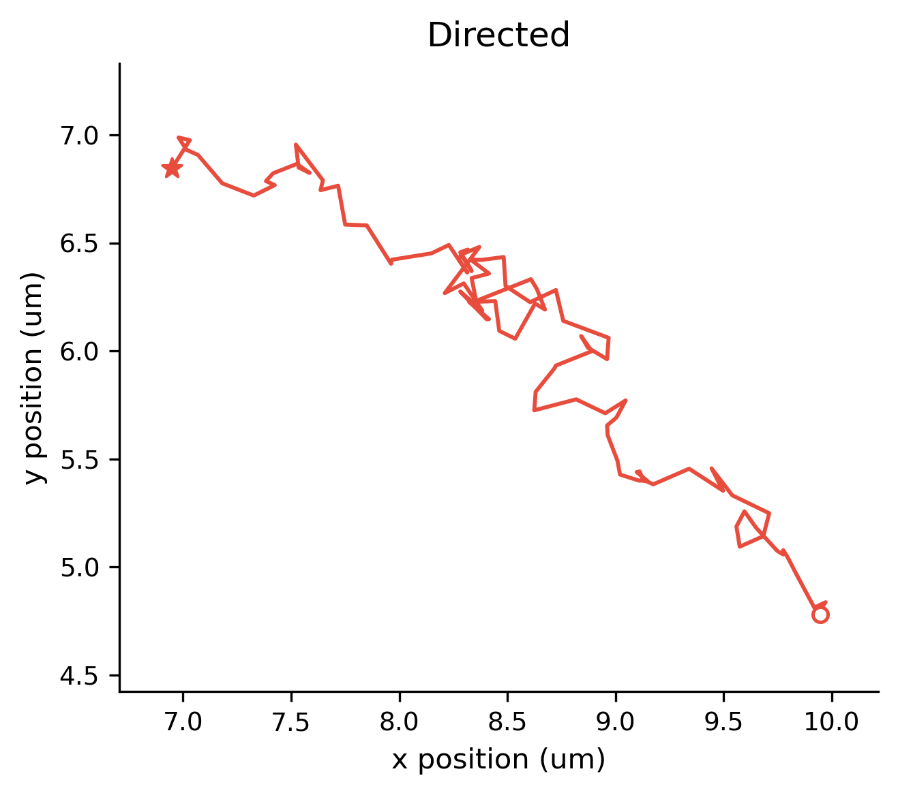
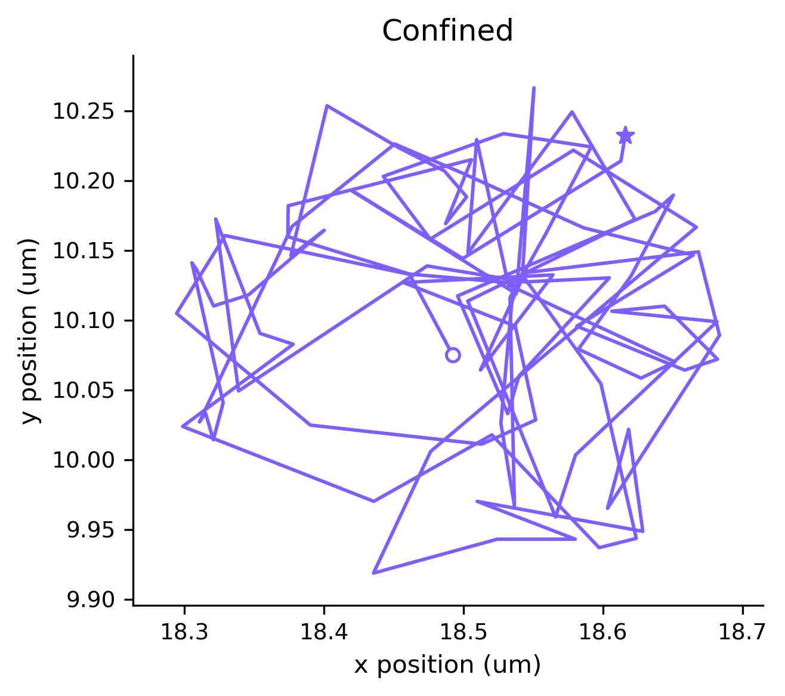
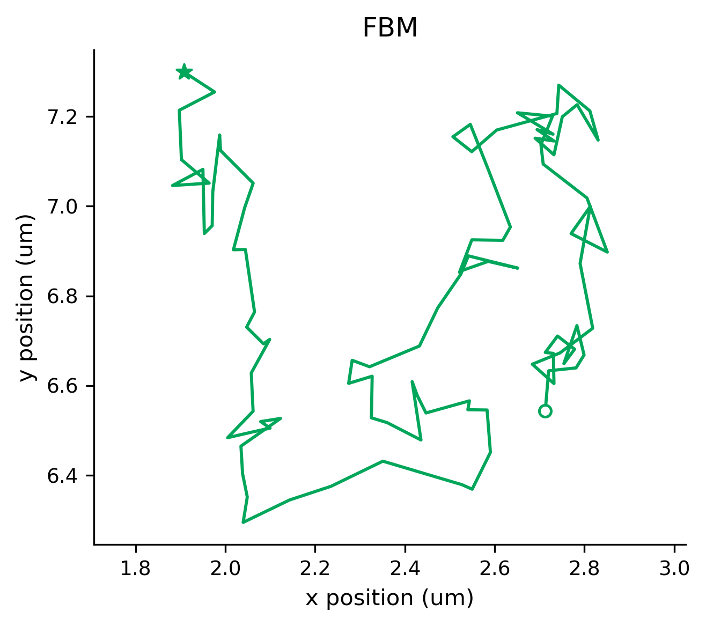
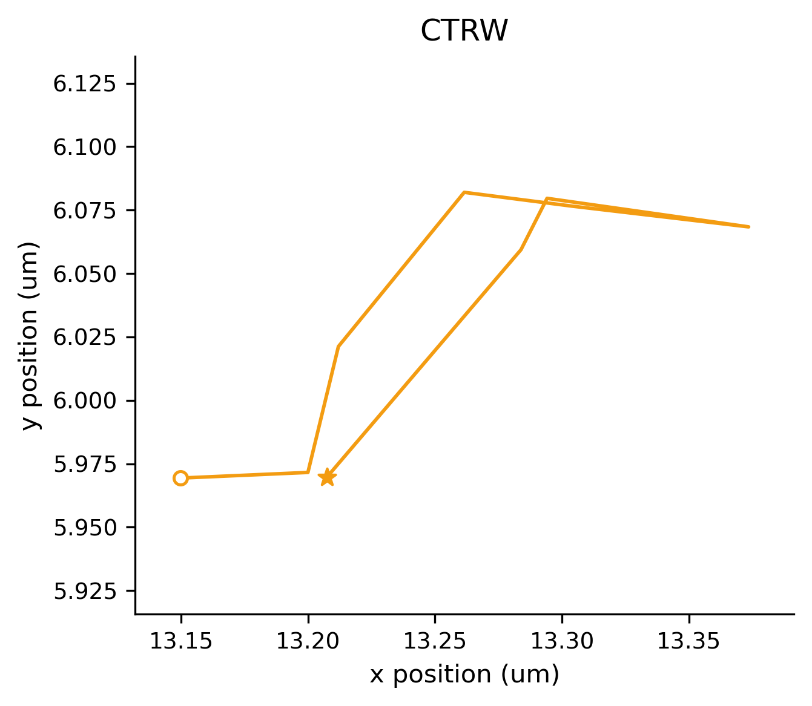
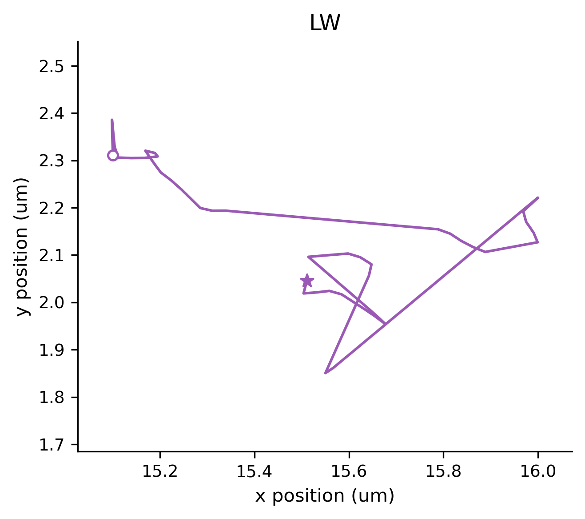
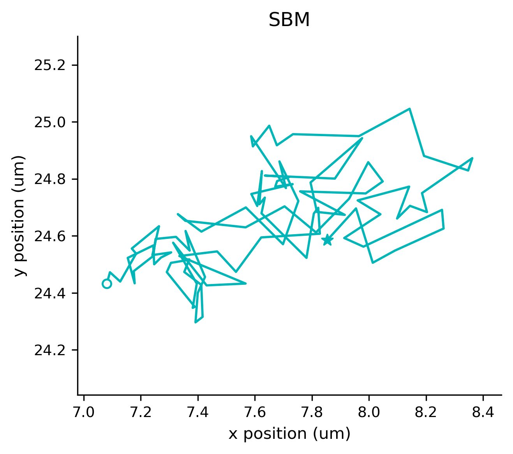
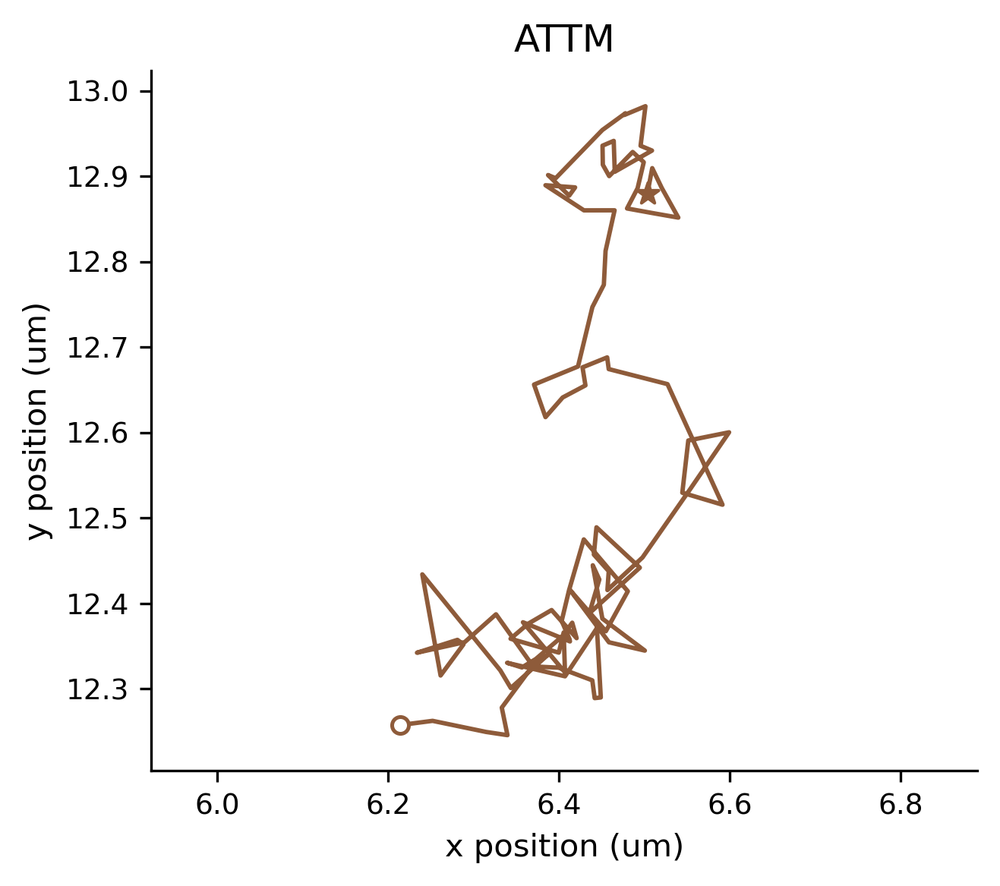
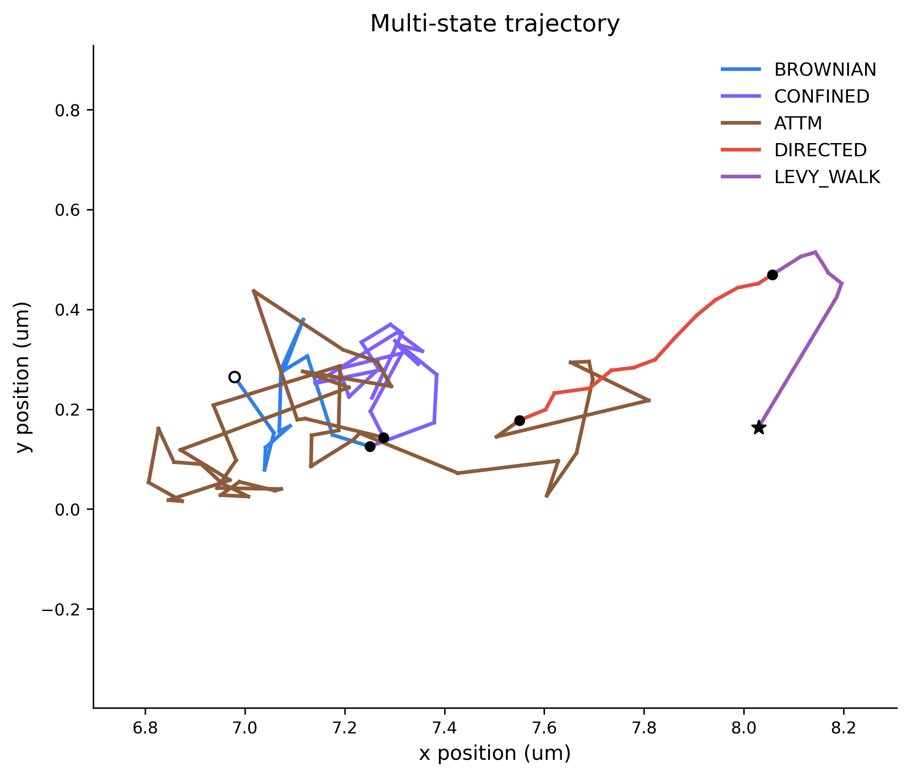

synSPT is an ImageJ/Fiji synthetic data generator for two-dimensional single-particle tracking. It supports eight basic motion models and Multi-state Motion, producing microscopy images together with reproducible ground truth.
Each Generate creates a unique run subfolder. Existing runs are never replaced.
Each example illustrates one possible trajectory. Plots use their own coordinate scales.
Brownian Motion represents random diffusion without a persistent directional bias. Successive displacements are independent Gaussian samples, so an earlier step does not determine the direction of the next one. A typical trajectory looks irregular and locally zigzagged, although short stretches can point in one direction by chance. Its diffusion strength stays constant over time, making it the baseline for comparing the other models. It can serve as a simple representation of freely diffusing molecules or small particles in a uniform fluid.

Directed Motion combines random diffusion with transport at a constant speed and direction. Random displacements make the particle wander around the underlying transport path rather than follow a perfectly straight line. The trajectory may look elongated along a preferred direction, with that trend less obvious when diffusion dominates. Unlike ordinary Brownian Motion, this model includes a persistent directional bias throughout the segment. It can provide a simplified representation of cargo transport or particles carried by a steady flow, without explicitly simulating motors or fluid dynamics.

Confined Diffusion represents random motion within a finite circular compartment. The particle makes small Brownian movement attempts, and attempts that would leave the compartment are rejected. Over time, the trajectory can repeatedly revisit the same area and form a compact cluster rather than spread freely. The main difference from ordinary Brownian Motion is this additional local spatial restriction, not a preferred direction of travel. It can serve as a simplified model of a molecule restricted to a membrane domain or a particle retained within a small compartment.

Fractional Brownian Motion introduces temporal correlations between Gaussian displacements. Depending on the selected behavior, successive movements can tend to continue a previous trend or oppose it, producing superdiffusive or subdiffusive spreading. Trajectories may therefore show extended runs of similar movement or frequent reversals and repeated exploration of nearby positions. Unlike ordinary Brownian Motion, the displacement history matters; unlike Directed Motion, persistence does not require a fixed transport direction. It can be used as a simplified description of motion with memory, such as diffusion influenced by a viscoelastic environment, without explicitly modeling the surrounding material.

Continuous-Time Random Walk alternates random waiting periods with Gaussian displacement events. The position stays unchanged between events, and the broad waiting-time distribution allows some pauses to last much longer than others. At the recorded frame times, a trajectory may show repeated positions followed by apparent jumps, although several events can also occur between two frames. Unlike ordinary Brownian Motion, its slow spreading comes from the irregular timing of movement rather than smaller motion at every instant. It can represent simplified trapping-and-release scenarios, such as particles temporarily immobilized at binding sites, without explicitly simulating binding chemistry.

Lévy Walk represents movement through directional flights at a finite, constant speed. Each flight keeps its direction for a randomly drawn duration, after which a new direction and duration are selected. Broadly distributed flight durations can produce long, nearly straight stretches separated by turns, and a flight may continue beyond the recorded observation window. Unlike ordinary Brownian Motion, the particle travels persistently within a flight rather than receiving an independent Gaussian displacement at every step. It can provide a simplified model of movement in runs or search-like transport, without explicitly modeling a biological propulsion mechanism.

Scaled Brownian Motion retains independent Gaussian displacements but changes their typical size systematically with elapsed time. Depending on the selected behavior, the effective diffusivity decreases or increases during the segment, so movement becomes less or more extensive as time passes. A trajectory may look more tightly clustered in one part of the recording and more spread out in another, especially when viewed in time order. Unlike ordinary Brownian Motion, its diffusion strength is not constant, and unlike FBM this change does not require correlations between successive displacements. It can represent a simplified situation in which particle mobility changes as an environment evolves, without explicitly simulating the environmental change.

Annealed Transient Time Motion changes particle mobility through a sequence of temporary diffusivity states. Within each state the particle makes Gaussian diffusive movements; when that state ends, a new diffusivity and associated residence time are drawn. In this implementation, lower diffusivities have longer residence times, so trajectories can contain compact, slowly explored regions separated by more mobile periods. Unlike ordinary Brownian Motion, diffusion strength varies irregularly over time, and unlike CTRW a slow state does not impose an exactly motionless waiting period. It can serve as a simplified description of diffusion in changing local environments with different mobilities, without explicitly simulating those environments.

Multi-state Motion combines several consecutive state segments selected from the eight basic models, rather than defining a new independent stochastic process. Segments are joined into one trajectory without resetting the particle position, and each transition marks a change point in its motion behavior. Different segments can use different models, while the same basic model may also recur, even in adjacent segments, with independently resampled parameters. Compared with an ordinary Brownian trajectory, a track can contain visibly different periods of random diffusion, directional transport, or restricted exploration, although some transitions may be subtle. It can represent simplified switching between movement regimes, such as a particle alternating between diffusion and transport, and is useful for testing change-point detection.
